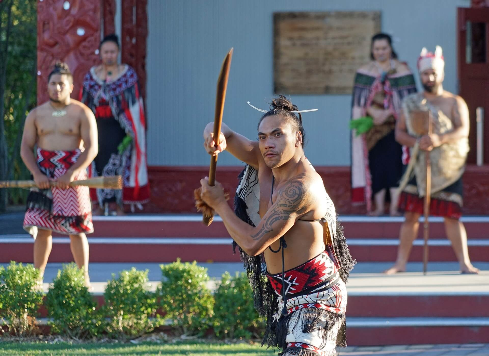
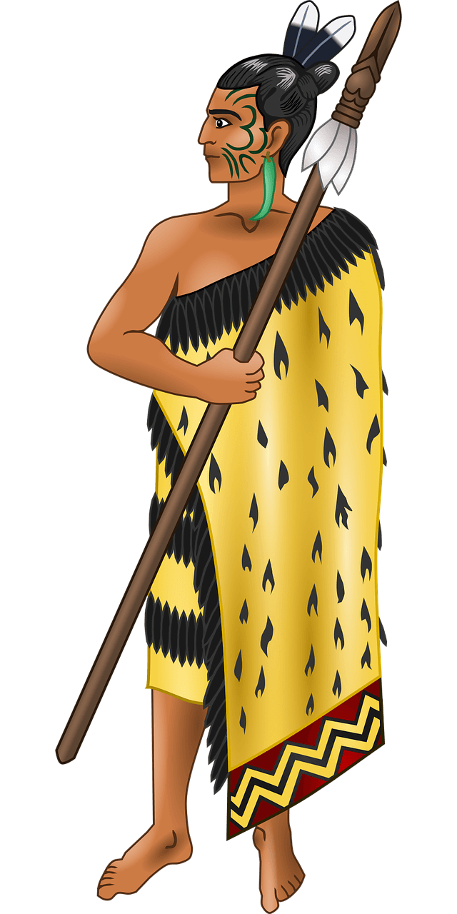

Māori Culture/Tikanga Māori
Māori culture has a very rich history with many complexities. A single page cannot do it justice.
One of our goals, here at Haukai Restaurant, is to provide a little knowledge
All food at Haukai is given a karakia which is a blessing.
Here is a video of the karakia that Haukai Restaurant uses and the English translation provided by Grant Whitbourne who heads the Starting in Te Reo Māori Youtube channel.
Haukai Restaurant can provide a powhiri (welcoming ceremony) upon requests for large groups. Please ask us about this service when you make your booking
Unfortunately, we cannot provide this for all guests due to the complexities of this sacred ritual
If you would like to learn more about what a Please provide a detailed account of a powhiri which has been provided by Bradley White on Youtube.
Haukai uses a lot of Māori terms. With the most common words you will hear being:
Kia ora - hello
Po mārie - good evening
Nau mai, haere mai - welcome
Ka kite (ano) - See you (again)
Haera rāa - Goodbye (said to someone leaving by a person who is staying behind
Kai - food
Tapu - sacred
These are just a small taste of the words that you will likely encounter
To learn more, please visit New Zealand Travel Tips HERE.
If you want to get started speaking te reo Māori, watch the below video on the greeting kia ora provide by 100% Pure New Zealand via Youtube to get you inspired.
About Haukai/Mo Haukai
Hello and welcome to Haukai Restaurant.
Haukai Restaurant specializes in Māori food in the Bay of Islands of New Zealand. We were started by a couple who wants to create an environment that appeals to everyone, from locals to tourists visiting the area.
 Our dinner menu features both Māori and Pākeha kai options and drinks but, most importantly, We want our guests to have the most authentic experience possible.
We will introduce our guests to various Māori customs and traditions such as karakia (the blessing of food) among many others to go along with their delicious kai.
We have something for every, just check out our menu, and we are sure we will see you soon.
Kia ora, nau mai, haere mai ki te wharekai o Haukai.
Ko te whare kai o Haukai he tohungatanga ki nga kai Maori i Pwhairangi o Aotearoa. I timata matou na te tokorua e pirangi ana ki te hanga i tetahi taiao e pai ana ki te katoa, mai i te tangata whenua ki te hunga turuhi te haere ki te takiwa.
Ko ta matou tahua kai e whakaatu ana i nga whiringa kai me nga inu kai a te Māori me te Pākeha engari, ko te mea nui, ko te hiahia kia whiwhi a tatou manuhiri i te wheako tino pono.
Ka whakamohiotia a tatou manuhiri ki nga tikanga me nga tikanga a te Maori penei i te karakia i roto i te tini ke atu ki te haere tahi me a ratou kai reka.
Kei a matou tetahi mea mo ia, tirohia noa ta matou tahua, a ka tino mohio matou ka kite wawe koe.